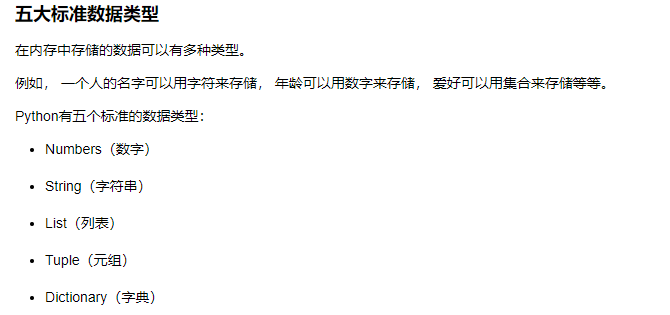
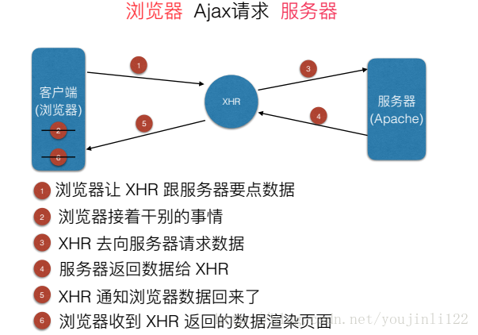
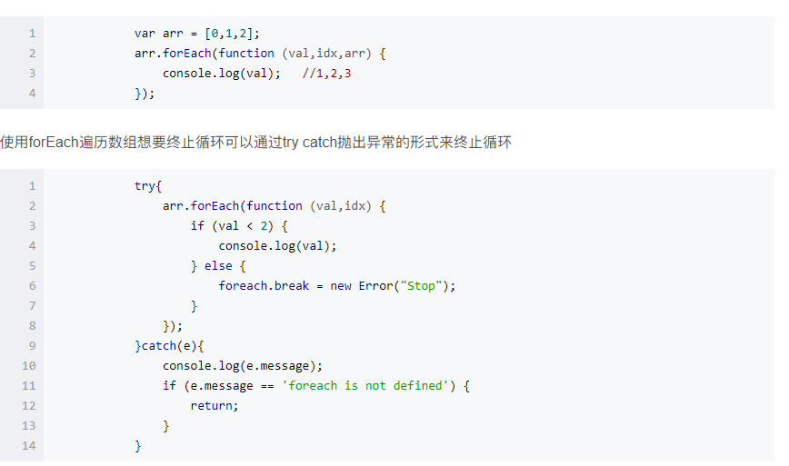
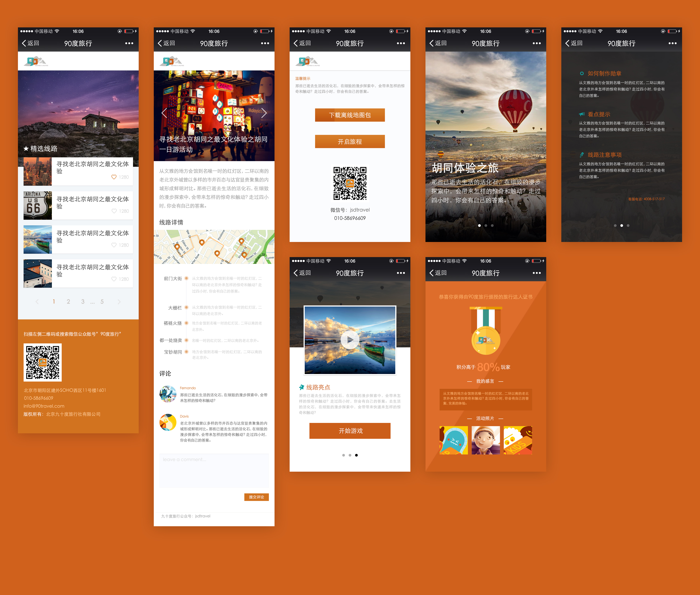

首页
生活笔记
技术杂谈
给我留言
赞助作者
技术交流
搜索
登陆
还在学习的路上，虽然还没有什么成就。但我相信坚持下去总会有结果。
联系作者
文章归档
2018年7月
2018年8月
2018年9月
标签云
HTML()
CSS()
jQuery()
Javascript()
Ajax()
linux()
Bootstrap()
Swiper()
python()
Photoshop()
EChars()
Git()
正则表达式
最新排序
1
python基础之五大标准数据类型
2
Ajax的工作原理及优缺点！读完这篇你就懂了！！！
3
原生JS迭代遍历方法使用指南
4
移动端页面开发流程
python
python基础之五大标准数据类型

学习一门语言，往往都是从Hello World开始。 但是笔者认为，在一个黑框框中输出一个“你好，世界”并没有什么了不起，要看透事物的本质，熟悉一门语言，就要了解其底层，就是我们常常说的基础。本篇从python中的变量类型开始。 五大标准数据类型 在内存中存储的数据可以有多种类型。 例如， 一个人的名字可以用字符来存储， 年龄可以用数字来存储， 爱好可以用集合来存储等等。 Python有五个标准的数据类型：
2018.9.20
ajax
Ajax的工作原理及优缺点！读完这篇你就懂了！！！

1.概念：什么是AJAX AJAX全称为“Asynchronous JavaScript and XML”（异步JavaScript和XML），是一种创建交互式网页应用的网页开发技术。 2.为什么要使用他？ 最大的优点：不刷新整个页面的情况下与服务器通信保持原有页面状态，通俗点，浏览网页的时候回有两种情况，点击，1，白屏，等待跳转到另一个页。2.页面不刷新，局部出现新内容获得更好的用户体验。 3.基本原理 先看图 XHR相当于是一个通信兵，来负责客户端与服务器之间的通信传输。要打仗了，前方阵地不可能只等着通信兵传递消息其他什么也不干吧，所以前方阵地还在干着自己的事情派通信兵去请求后方指挥的命令（服务器），指挥下达命令指挥，通信兵再吧命令传到前方阵地（客户端），然后客户端吧数据渲染到页面。 那什么是XHR？（AJAX工作原理） 他的全称是XMLHttpRequest，AJAX就是通过浏览器的内置对象XHMHttpResquest来发送异步请求的，异步请求不会妨碍前方阵地（客户端）的任何操作。 4.了解异步和同步 刚才说了异步，那什么是同步，同步就是前方阵地和通信兵一起去像服务器请求数据，直到通信兵请求到数据我才开始渲染页面，在请求的过程中一直是白屏等待的。 5.XMLHttpResquest对象的属性有哪些？ AJAX既然是通过浏览器的内置对象XMLHttpRequest来处理异步请求的那我们先来了解下他又哪些属性 属性 描述 1. onreadyStatechange 状态改变的事件触发器每个状态改变时都会触发 这个事件处理器，通常会调用一个javaScript函数 2. readyState 请求的状态： 0>.请求未初始化 1>.服务器链接已建立 2>.请求已接收 3>.请求处理中 4>.请求已完成，响应已就绪 3.responseText 返回请求数据文本 4.responseXML 返回XML文档对象 5.status 返回状态码 如404 200 6.创建XMLHttpRequest对象并发送AJAX请求 为了应对所有的现代浏览器，检测是否支持XMLHttpRequest对象 window.onload = function(){ //1.创建XMLHttpRequest对象考虑兼容性 var xhr = null if(window.XMLHttpRequest){ //现代浏览器 xhr = new XMLHttpRequest() }else{ xhr = new ActiveXObject('Microsoft.XMLHTTP')//IE5/6 } } console.log('状态A'+xhr.readyState) //2.设置请求方式。第一种方式get请求（2）post请求 var url = '数据' //get请求，true异步请求，false，同步 xhr.open('get', url, true) console.log('状态B'+xhr.readyState) /*（2）post请求 必须添加请求头 var url = '数据' xhr.open('post', url, true) xhr.setRequestHander('Content-type','application/x-www-form-urlencoded') */ //3.发送请求 xhr.send() console.log('状态C'+xhr.readyState) //4.回调函数 xhr.onreadyStatechange = function() { if(xhr.readyState == 4 && xhr.status == 200) { console.log(xhr.resposeText) //字符串 //console.log(xhr.resposeXML) } }123456789101112131415161718192021222324252627282930313233 AJAX的优点： 1.最大的优点就是页面无需刷新，在页面内与服务器通信，非常好的用户体验。 2.使用异步的方式与服务器通信，不需要中断操作。 3.可以把以前服务器负担的工作转嫁给客户端，减轻服务器和带宽，可以最大程度减少冗余请求。 缺点： 1.AJAX干掉了Back和History功能，即对浏览器机制的破坏。 在动态更新页面的情况下，用户无法回到前一个页面状态，因为浏览器仅能记忆历史记录中的静态页面。一个被完整读入的页面与一个已经被动态修改过的页面之间的差别非常微妙；用户通常会希望单击后退按钮能够取消他们的前一次操作，但是在Ajax应用程序中，这将无法实现。 2.安全问题技术同时也对IT企业带来了新的安全威胁，ajax技术就如同对企业数据建立了一个直接通道。这使得开发者在不经意间会暴露比以前更多的数据和服务器逻辑。ajax的逻辑可以对客户端的安全扫描技术隐藏起来，允许黑客从远端服务器上建立新的攻击。还有ajax也难以避免一些已知的安全弱点，诸如跨站点脚步攻击、SQL注入攻击和基于credentials的安全漏洞等。 3.对搜索引擎的支持比较弱。如果使用不当，AJAX会增大网络数据的流量，从而降低整个系统的性能。 4.、一些手持设备（如手机、PDA等）现在还不能很好的支持ajax，比如说我们在手机的浏览器上打开采用ajax技术的网站时，它目前是不支持的，当然，这个问题和我们没太多关系。(这个时候我们可以用其他的插件来代替) --------------------- 本文来自 youjinli122 的CSDN 博客 ，全文地址请点击：https://blog.csdn.net/youjinli122/article/details/77412851?utm_source=copy
2018.9.16
Javascript
原生JS迭代遍历方法使用指南

在原生JS中，除了for循环以外，自身还带有5中迭代的方法，可根据场景自行选择，十分方便 1.forEach forEach十分好用，数组的forEach回调函数中写入执行代码段就可以，回调函数有三个参数，第一个为数组的每一个值，第二个参数为index下标，第三个参数为当前数组，但是注意的是forEach不能通过在For循环中使用return或者return false、break等方法终止遍历，jQuery中的$.each方法break使用return false，continue使用return true --------------------- 本文来自 Joker_561 的CSDN 博客 ，全文地址请点击：https://blog.csdn.net/sinat_34368775/article/details/78223644?utm_source=copy
2018.9.9
HTML
CSS
移动端页面开发流程

移动端页面布局 一、移动端app分类 1、Native App原生app手机应用程序 使用原生的语言开发的手机应用，Android系统用的是java，ios系统用的是object-C 2、Hybrid App 混合型app手机应用程序 混合使用原生的程序和html5页面开发的手机应用 3、Web App 基于Web的app手机应用程序 完全使用html5页面加前端js框架开发的手机应用 二、Viewport视口 视口是移动设备上用来显示网页的区域，一般会比移动设备可视区域大，宽度可能是980px或者1024px，目的是为了显示下整个为PC端设计的网页，这样带来的后果是移动端会出现横向滚动条，为了避免这种情况，移动端会将视口缩放到移动端窗口的大小。这样会让网页不容易观看，可以用meta标签，name="viewport"来设置视口的大小，将视口的大小设置为和移动设备可视区一样的大小。 在移动端用来承载网页的这个区域，就是我们的视觉窗口，viewport（视口），这个区域可以设置高度宽度，可以按比例放大缩小，而且能设置是否允许用户自行缩放。
2018.8.10